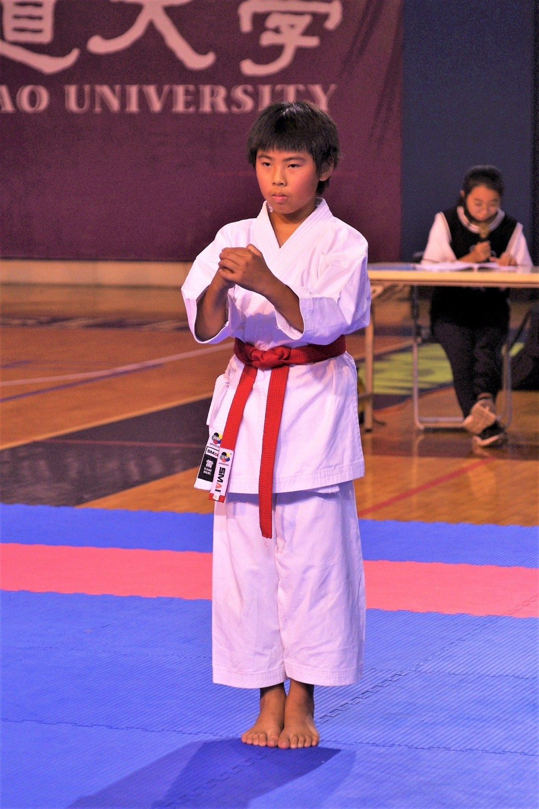
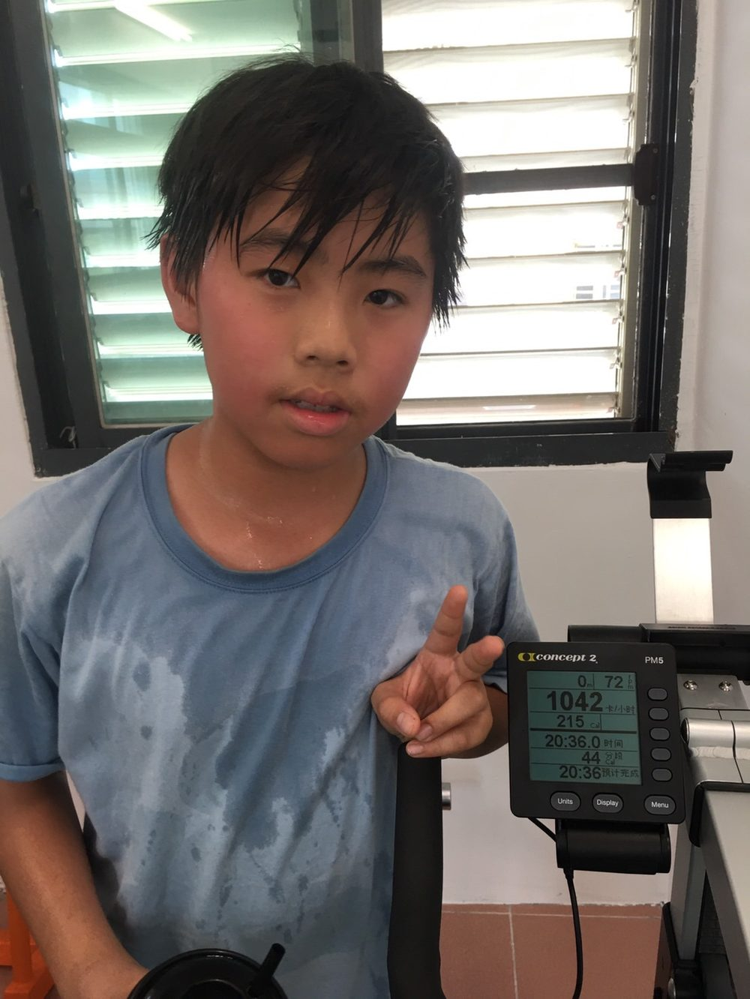

🎒 除了不落蒂聯盟以外的我
我也是荒野少年、
我也是荒野少年、
空手道選手，喜歡看書看電影
環境行動只是我的一部分。平常的我很好動也很好奇：練空手道、划船機、跟家人一起看電影、跟朋友聊天，週末常常在荒野保護協會的活動裡度過。
 在活動上分享
在活動上分享
環境行動只是我的一部分。平常的我很好動也很好奇：練空手道、划船機、跟家人一起看電影、跟朋友聊天，週末常常在荒野保護協會的活動裡度過。
在活動上分享

我拿過好幾面空手道金牌，但比起獎牌，我更喜歡比賽教我的事：怎麼在壓力下保持專注、怎麼在輸掉之後重新站起來。這些練習出來的韌性，也是我後來能帶領不落蒂聯盟走過低潮的原因。

划船機、重量訓練是我平常維持體力的方式——尤其是準備空手道比賽或北極科學考察這類需要體力的行動之前。
我是宜蘭帆船隊的選手，長期接受帆船訓練與比賽。這種對海洋的親近感，也讓我更在意菸蒂如何汙染水源這件事。
兩個團體，把我變成現在的我。
從 5 歲加入到現在，已經是第 9 年的夥伴。這段旅程讓我真正愛上自然，也是我想保護環境最早的起點。
國中時加入童軍，並擔任隊長。學會野外求生技巧、也學會怎麼帶著一群人一起完成任務——這些能力後來都用在帶領不落蒂聯盟上。
參加過基隆、台中等地的小隊壯遊行動，也完成過環島壯遊，喜歡在路上學習、在挑戰裡成長。
我超愛這個西方魔法世界，整套已經看了三次！
最近又重讀了第二次。我很喜歡書裡那些勇敢又願意幫助有需要的人的英雄角色。
我是一個好動又好奇的青少年，很喜歡跟家人一起看電影，也喜歡跟朋友聊天、認識新朋友、看見更大的世界。